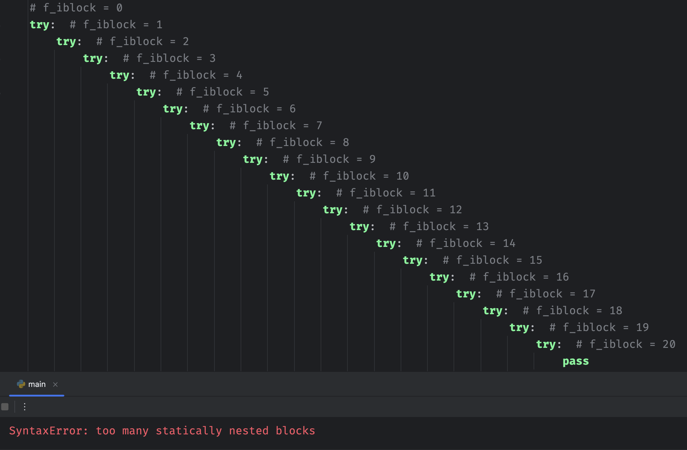
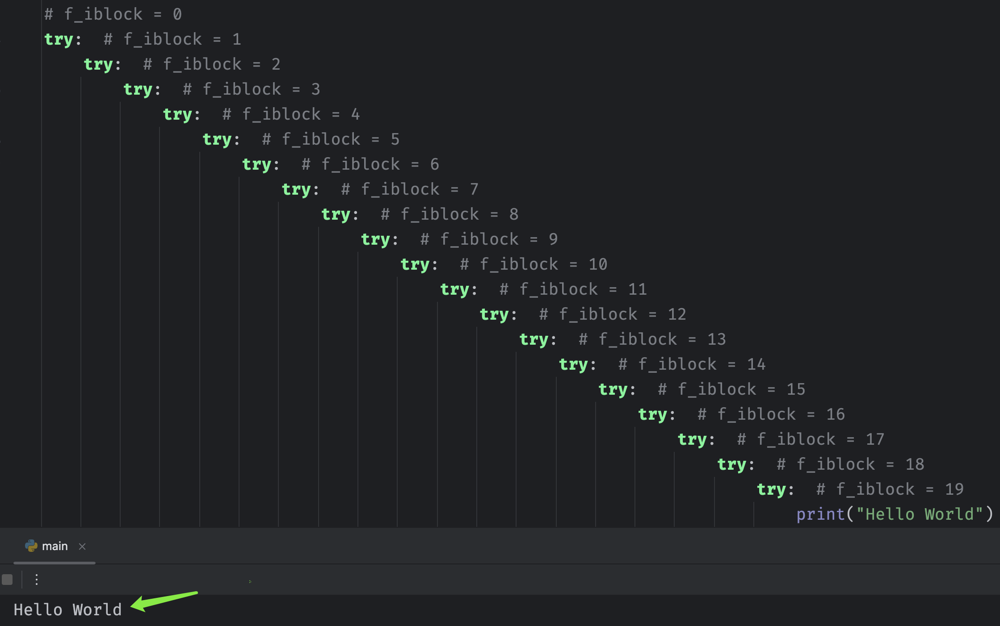
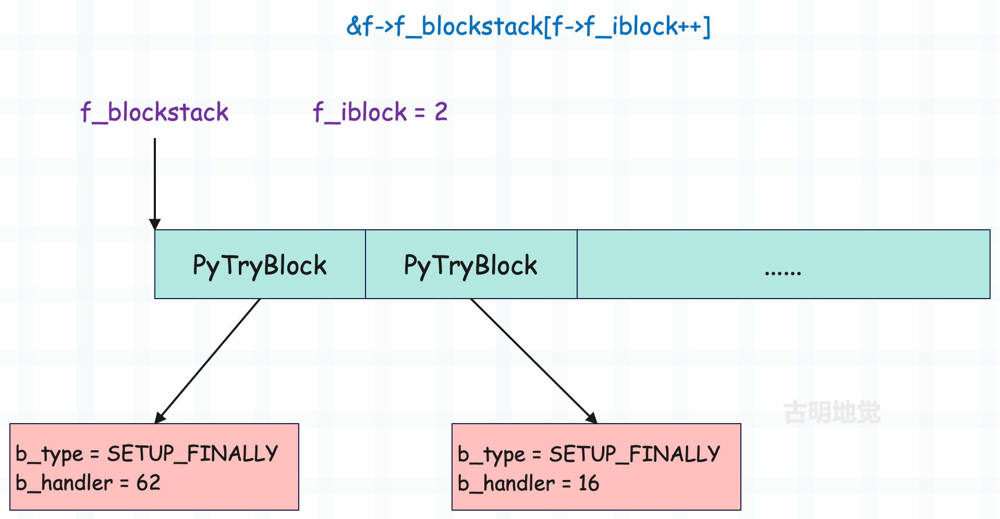
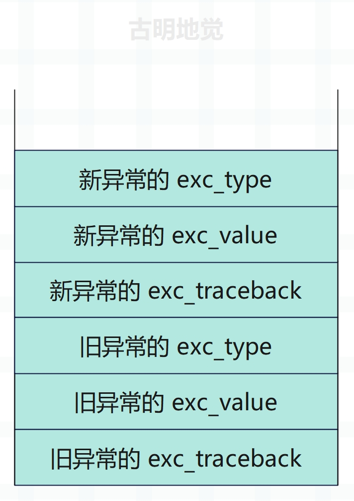
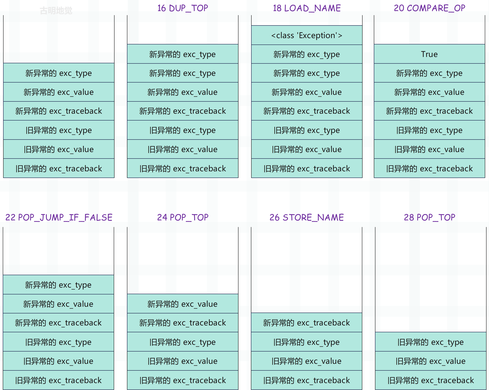
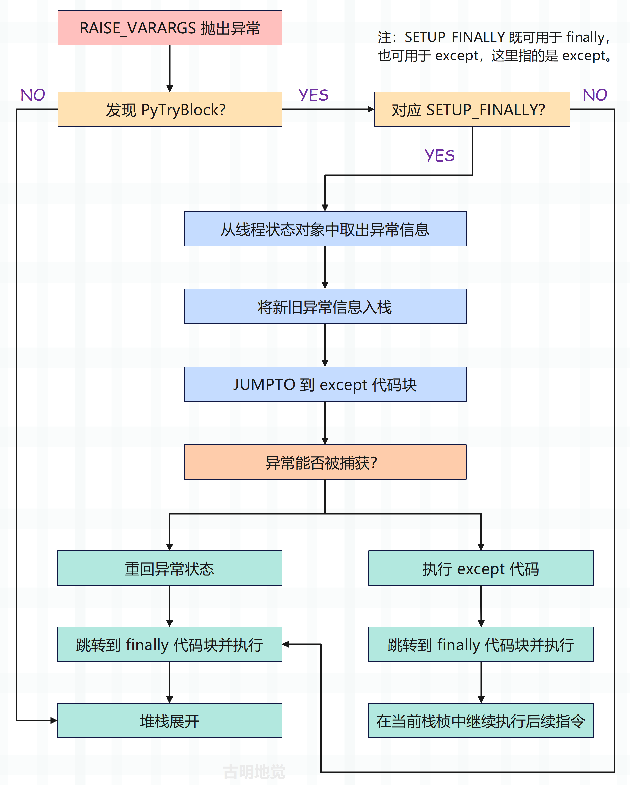
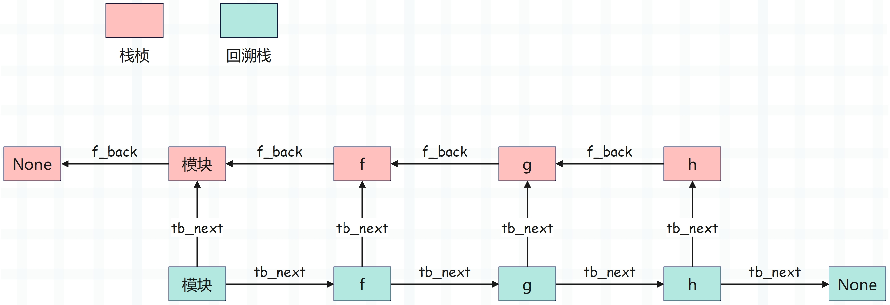

楔子
上一篇文章我们介绍了 Python 的异常是怎么实现的，抛出异常这个动作在虚拟机层面上是怎样的一个行为，以及虚拟机在处理异常时的栈帧展开行为。
既然虚拟机内建的异常处理动作我们已经了解了，那么接下来就看看异常捕获是如何实现的，还有它又是如何影响虚拟机的异常处理流程的。毕竟在大部分情况下，我们都不会将异常抛出去，而是将它捕获起来。
异常捕获语句
这里先来回顾一下异常捕获语句，首先一个完整的异常捕获语句如下。
try:
pass
except IndexError as e:
pass
except Exception as e:
pass
else:
pass
finally:
pass
情况可以分为以下几种：
1）如果 try 里面的代码在执行时没有出现异常，那么会执行 else ，然后执行 finally。
try:
print("我是 try")
except Exception as e:
print("我是 except")
else:
print("我是 else")
finally:
print("我是 finally")
"""
我是 try
我是 else
我是 finally
"""
2）如果 try 里面的代码在执行时出现异常了（异常会被设置在线程状态对象中），那么会依次判断 except（可以有多个）能否匹配发生的异常。如果某个 except 将异常捕获了，那么会将异常给清空，然后执行 finally。
try:
raise IndexError("IndexError Occurred")
except ValueError as e:
print("ValueError 匹配上了异常")
except IndexError as e:
print("IndexError 匹配上了异常")
except Exception as e:
print("Exception 匹配上了异常")
else:
print("我是 else")
finally:
print("我是 finally")
"""
IndexError 匹配上了异常
我是 finally
"""
except 子句可以有很多个，发生异常时会从上往下依次匹配。但是注意：多个 except 子句最多只有一个被执行，比如当前的 IndexError 和 Exception 都能匹配发生的异常，但只会执行匹配上的第一个 except 子句。
另外只要发生异常了，else 就不会执行了。不管 except 有没有将异常捕获到，都不会执行 else，因为 else 只有在 try 里面没有发生异常的时候才会执行。
3）如果 try 里面的代码在执行时出现异常了，但 except 没有将异常捕获掉，那么异常仍然被保存在线程状态对象中，然后执行 finally。如果 finally 子句中没有出现 return、break、continue 等关键字，再将异常抛出来。
try:
raise IndexError("IndexError Occurred")
except ValueError:
print("ValueError 匹配上了异常")
finally:
print("我是 finally")
"""
我是 finally
Traceback (most recent call last):
File "......", line 2, in <module>
raise IndexError("IndexError Occurred")
IndexError: IndexError Occurred
"""
except 没有将异常捕获掉，所以执行完 finally 之后，异常又被抛出来了。但如果 finally 里面出现了 return、break、continue 等关键字，也不会抛出异常，而是将异常丢弃掉。
def f():
try:
raise IndexError("IndexError Occurred")
except ValueError:
print("ValueError 匹配上了异常")
finally:
print("我是 finally")
return
f()
"""
我是 finally
"""
def g():
for i in range(3):
try:
raise IndexError("IndexError Occurred")
except ValueError:
print("ValueError 匹配上了异常")
finally:
print(f"我是 finally，i = {i}")
continue
g()
"""
我是 finally，i = 0
我是 finally，i = 1
我是 finally，i = 2
"""
由于 finally 里面出现了 return 和 continue，所以异常并没有发生，而是被丢弃掉了。这个特性相信有很多小伙伴之前还是没有发现的。
然后 try、except、else、finally 这几个关键字不需要同时出现，可以有以下几种组合。
try ... except
try ... finally
try ... except ... else
try ... except ... else ... finally
注意里面的 except，可以出现多次，但其它关键字在一个 try 语句内只能出现一次。
返回值问题
如果这几个关键字对应的代码块都指定了返回值，那么听谁的呢？下面解释一下。
def retval():
try:
return 123
except Exception:
return 456
print(retval()) # 123
由于没有发生异常，所以返回了 try 指定的返回值。
def retval():
try:
return 123
except Exception:
return 456
else:
return 789
print(retval()) # 123
虽然指定了 else，但是 try 里面已经执行 return 了，所以打印的仍是 try 的返回值。
def retval():
try:
1 / 0
return 123
except Exception:
return 456
print(retval()) # 456
由于发生异常，所以返回了 except 指定的返回值。
def retval():
try:
1 / 0
return 123
except Exception:
return 456
else:
return 789
print(retval()) # 456
一旦发生异常，else 就不可能执行，所以此时仍然返回 456。
def retval():
try:
return 123
except Exception:
return 456
finally:
pass
print(retval()) # 123
finally 永远会执行，但它没有指定返回值，所以此时返回的是 123。
def retval():
try:
return 123
except Exception:
return 456
finally:
return
print(retval()) # None
一旦 finally 中出现了 return，那么返回的都是 finally 指定的返回值。并且此时即便出现了没有捕获的异常，也不会报错，因为会将异常丢弃掉。
def retval():
try:
return 123
except Exception:
return 456
finally:
pass
return 789
print(retval()) # 123
函数一旦 return，就表示要返回了，但如果这个 return 是位于出现了 finally 的异常捕获语句中，那么会先执行 finally，然后再返回。所以最后的 return 789 是不会执行的，因为已经出现 return 了，finally 执行完毕之后就直接返回了。
def retval():
try:
pass
except Exception:
return 456
finally:
pass
return 789
print(retval()) # 789
没有异常，所以 except 里的 return 不会执行，而 try 和 finally 里面也没有 return，因此返回 789。
一个简单的异常捕获，总结起来还稍微有点绕呢。
从 Python 的层面理解完异常捕获之后，再来看看虚拟机是如何实现这一机制的？想要搞清楚这一点，还是得从字节码入手。
异常捕获对应的字节码
随便写一段代码，然后反编译一下。
import dis
code_string = """
try:
raise Exception("抛出一个异常")
except Exception as e:
print(e)
finally:
print("我一定会被执行的")
"""
dis.dis(compile(code_string, "exception", "exec"))
抛异常有两种方式，一种是虚拟机执行的时候出现错误而抛出异常，另一种是使用 raise 关键字手动抛出异常。这里我们就用第二种方式，来看一下反编译的结果（为了清晰，省略掉了源代码行号）。
0 SETUP_FINALLY 60 (to 62)
2 SETUP_FINALLY 12 (to 16)
4 LOAD_NAME 1 (Exception)
6 LOAD_CONST 1 ('抛出一个异常')
8 CALL_FUNCTION 1
10 RAISE_VARARGS 1
12 POP_BLOCK
14 JUMP_FORWARD 42 (to 58)
>> 16 DUP_TOP
18 LOAD_NAME 1 (Exception)
20 COMPARE_OP 10 (exception match)
22 POP_JUMP_IF_FALSE 56
24 POP_TOP
26 STORE_NAME 2 (e)
28 POP_TOP
30 SETUP_FINALLY 12 (to 44)
32 LOAD_NAME 0 (print)
34 LOAD_NAME 2 (e)
36 CALL_FUNCTION 1
38 POP_TOP
40 POP_BLOCK
42 BEGIN_FINALLY
>> 44 LOAD_CONST 2 (None)
46 STORE_NAME 2 (e)
48 DELETE_NAME 2 (e)
50 END_FINALLY
52 POP_EXCEPT
54 JUMP_FORWARD 2 (to 58)
>> 56 END_FINALLY
>> 58 POP_BLOCK
60 BEGIN_FINALLY
>> 62 LOAD_NAME 0 (print)
64 LOAD_CONST 0 ('我一定会被执行的')
66 CALL_FUNCTION 1
68 POP_TOP
70 END_FINALLY
72 LOAD_CONST 2 (None)
74 RETURN_VALUE
指令集还是有点复杂的，因为要分好几种情况。
- try 里面没有出现异常。
- try 里面出现了异常，但是 except 没有捕获到。
- try 里面出现了异常，except 捕获到了。
但我们知道无论是哪种情况，都要执行 finally，所以开头有两个 SETUP_FINALLY 指令，但为什么会有两个呢？因为在 Python 的异常处理机制中，try-except-finally 结构会被编译成两个嵌套的异常处理块：
- 第一个 SETUP_FINALLY 是为了处理 finally 块，会把 finally 块的地址压入栈中，它确保无论 try 块中是否发生异常，finally 块中的代码都会被执行；
- 第二个 SETUP_FINALLY 实际上是在处理 except 块，在 Python 的字节码层面，except 块也是通过 SETUP_FINALLY 实现的；
我们来看一下 SETUP_FINALLY 指令都干了什么。
case TARGET(SETUP_FINALLY): {
PyFrame_BlockSetup(f, SETUP_FINALLY, INSTR_OFFSET() + oparg,
STACK_LEVEL());
DISPATCH();
}
该指令内部仅仅是调用了 PyFrame_BlockSetup 函数，但是参数我们需要解释一下。
- f：当前的栈帧对象。
- SETUP_FINALLY：指令本身，一个整数，值为 122。
- INSTR_OFFSET()：一个宏，下一条待执行指令的偏移量，如果再加上 oparg，那么会对应 finally 子句（或 except 子句）。
- STACK_LEVEL()：返回运行时栈的元素个数。
下面看看 PyFrame_BlockSetup 函数的本体。
// Objects/frameobject.c
void
PyFrame_BlockSetup(PyFrameObject *f, int type, int handler, int level)
{
// 关于 PyTryBlock 我们稍后再聊，总之 except 和 finally 都会对应 SETUP_FINALLY 指令
// 虚拟机都会为它们创建 PyTryBlock
PyTryBlock *b;
// 一会儿解释
if (f->f_iblock >= CO_MAXBLOCKS)
Py_FatalError("XXX block stack overflow");
// 栈帧有一个 f_blockstack 字段，它是 PyTryBlock 类型的数组
// 当栈帧创建完毕后，f_blockstack 的内存就已经申请好了
// 因此当需要创建 PyTryBlock 实例时，只需从 f_blockstack 里面获取即可
b = &f->f_blockstack[f->f_iblock++];
// 设置 PyTryBlock 实例的字段，这个结构体一会儿说
b->b_type = type;
b->b_level = level;
b->b_handler = handler;
}
当解释器发现 except 和 finally 时，在进入 try 语句块之前会先执行 SETUP_FINALLY 指令，通过索引 f_iblock 从 f_blockstack 数组中获取 PyTryBlock。
- 每获取一个 PyTryBlock，f_iblock 会自增 1；
- 当 except 或 finally 执行完毕时，要交还对应的 PyTryBlock，所以 f_iblock 会自减 1。
然后注意一下上面代码中的 if 条件，CO_MAXBLOCKS 是一个宏，值为 20，所以 f_iblock 的值必须小于 20。这也意味着，try 语句不能嵌套太深。我们举例说明：

每个 try 都对应一个 except，因为屏幕不够，这里只截取了一半。每次进入 try 之前，会提前执行 SETUP_FINALLY，获取 PyTryBlock。由于每获取一个，f_iblock 自增 1，而这里嵌套了 20 层，导致 f_iblock 达到了 20，所以报错了，这是一个在编译阶段就能检测出的错误。
如果我们去掉一层呢？看看报不报错。

结果没有问题，当然啦，如果不是恶意代码，我个人认为不会存在嵌套层级如此之深的异常捕获。
然后再来看看里面的 f_iblock，它表示对应的 PyTryBlock 在 f_blockstack 数组中的索引。栈帧刚创建时，f_iblock 的值为 0，每当执行 SETUP_FINALLY 指令时，就会从 f_blockstack 数组中获取一个 PyTryBlock，然后 f_iblock 自增 1。那么 PyTryBlock 长什么样子呢？
// Include/frameobject.h
typedef struct {
int b_type;
int b_handler;
int b_level;
} PyTryBlock;
b_type 表示 block 的种类，因为存在多种用途的 PyTryBlock 对象，除了 SETUP_FINALLY 之外还有 SETUP_WITH 等。然后在 PyFrame_BlockSetup 中我们看到它被设置成了参数 type，而参数 type 接收的就是当前虚拟机正在执行的字节码指令。因此 PyTryBlock 具有多种用途，具体用于哪种则基于字节码指令进行判断。
b_handler 表示处理程序的字节码偏移量，即跳转目标，比如当前的 try 语句块，当 try 执行完了或者执行出错后，要跳转到什么位置呢？在 SETUP_FINALLY 指令中我们看到它被设置成了 INSTR_OFFSET() + oparg，所以它会跳转到 finally 或 except 所在的位置。
b_level 表示进入 try 语句块时的 STACK_LEVEL()，即运行时栈的深度，或者说当前运行时栈的元素个数，因为当发生异常时，要把运行时栈恢复到进入 try 语句块时的状态。
# 假设此时运行时栈的深度是 n
try: # SETUP_FINALLY 执行时 b_level = n
... # 执行内部逻辑
raise Exception("error") # 在这里不幸发生异常，那么要将栈恢复到 b_level 记录的深度 n
except Exception:
pass
所以 b_level 相当于一个检查点，通过 b_level，可以在发生异常时将运行时栈恢复到进入 try 时的状态。这种检查点机制确保了异常处理的可靠性，因为无论 try 块中发生什么，我们总能回到一个已知的、正确的栈状态。
然后我们再回头看开头的两个指令：
0 SETUP_FINALLY 60 (to 62)
2 SETUP_FINALLY 12 (to 16)
执行之后，f_blockstack 数组的布局如下：

取出两块 PyTryBlock，第一块对应 finally，会无条件执行，第二块对应 except，异常捕获的时候用。至于具体怎么做的稍后再说，我们先回到抛异常的地方看看。
// 加载 <class 'Exception'>
4 LOAD_NAME 1 (Exception)
// 加载字符串
6 LOAD_CONST 1 ('抛出一个异常')
// 尽管 Exception 是一个类，但调用的指令也同样是 CALL_FUNCTION
// 至于这个指令的具体细节后面会介绍
// 这里只需要知道一个异常对象已经被创建出来了，并被压入了运行时栈
8 CALL_FUNCTION 1
// 从运行时栈中弹出异常对象，然后抛出
10 RAISE_VARARGS 1
下面我们来看一下 RAISE_VARARGS 指令。
case TARGET(RAISE_VARARGS): {
PyObject *cause = NULL, *exc = NULL;
// raise 一个异常有三种方式
// 1）重新抛出当前异常，只写一个 raise 即可，此时 oparg = 0
// 2）抛出指定异常：raise exc，此时 oparg = 1
// 3）抛出指定异常并指定原因：raise exc from cause，此时 oparg = 2
// 所以当前的 oparg = 1
switch (oparg) {
case 2:
cause = POP(); /* cause */
/* fall through */
case 1:
exc = POP(); /* exc */
/* fall through */
case 0:
// 调用 do_raise 函数，将异常设置在线程状态对象中
if (do_raise(tstate, exc, cause)) {
goto exception_unwind;
}
break;
default:
_PyErr_SetString(tstate, PyExc_SystemError,
"bad RAISE_VARARGS oparg");
break;
}
goto error;
}
当异常设置完毕后，我们看到它跳转到了帧评估函数的 exception_unwind 标签，执行异常捕获。
exception_unwind:
// 虚拟机在进入 try 代码块之前，会为 except 和 finally 块创建 PyTryBlock
// 对于当前来说，由于同时指定了 except 和 finally，因此会存在两个 PyTryBlock
// 所以 f->f_iblock 的值为 2
while (f->f_iblock > 0) {
// 弹出 PyTryBlock，因为 except 在后面，所以要从后往前获取
PyTryBlock *b = &f->f_blockstack[--f->f_iblock];
// EXCEPT_HANDLER 定义在 opcode.h 中，值为 257，用于异常处理
// 但比较特殊的是，它不是一个指令，至于相关细节后续会看到
if (b->b_type == EXCEPT_HANDLER) { // 如果两者相等的话
// 这是一个宏，所做的事情如下
// 从线程状态对象中拿到 exc_info，这个和 python 里的 sys.exc_info() 等价
// 然后从栈顶弹出 exc_type、exc_value、exc_traceback，并设置在 exc_info 中
UNWIND_EXCEPT_HANDLER(b);
continue;
}
// UNWIND_BLOCK 是一个宏，所做的事情如下
/*
// 如果当前栈深度大于进入 try 块时记录的深度
// 不断从栈顶弹出对象，并减少引用计数
#define UNWIND_BLOCK(b) \
while (STACK_LEVEL() > (b)->b_level) { \
PyObject *v = POP(); \
Py_XDECREF(v); \
}
*/
// 这个 b_level 我们上面说过的，它保存了进入 try 块时的运行时栈的深度
// 因此这个宏就是用来倒掉多余的栈内容，把栈恢复到之前保存的检查点状态
UNWIND_BLOCK(b);
// 对于当前的代码而言，第一次弹出的 PyTryBlock 用于 except
// 它的 b_type = SETUP_FINALLY，b_handler = 16
if (b->b_type == SETUP_FINALLY) {
// 异常类型、异常值、回溯栈
PyObject *exc, *val, *tb;
// 拿到 b_handler，一会要跳转的目标位置，也就是 except 所在位置
int handler = b->b_handler;
// 从线程状态对象中拿到 exc_info，这个 exc_info 保存的还是旧异常的 exc_info
// 然后 exc_info 有三个字段，假设抛出的异常是 ValueError("值错了")
// exc_info->exc_type 就是 <class 'ValueError'>
// exc_info->exc_value 就是抛出的异常对象本身
// exc_info->exc_traceback 就是回溯栈
// exc_info->previous_item 指向上一个 _PyErr_StackItem 实例
_PyErr_StackItem *exc_info = tstate->exc_info;
// 将当前 PyTryBlock 的 b_type 设置为 EXCEPT_HANDLER
PyFrame_BlockSetup(f, EXCEPT_HANDLER, -1, STACK_LEVEL());
// 将旧异常的 exc_type、exc_value、exc_traceback 压入运行时栈
PUSH(exc_info->exc_traceback);
PUSH(exc_info->exc_value);
if (exc_info->exc_type != NULL) {
PUSH(exc_info->exc_type);
}
else {
Py_INCREF(Py_None);
PUSH(Py_None);
}
// 在 RAISE_VARARGS 指令中调用了 do_raise，设置了新异常
// 这里是拿到新异常的 exc_type、exc_value、exc_traceback
_PyErr_Fetch(tstate, &exc, &val, &tb);
// 对异常规范化处理，不用关注
_PyErr_NormalizeException(tstate, &exc, &val, &tb);
if (tb != NULL)
PyException_SetTraceback(val, tb);
else
PyException_SetTraceback(val, Py_None);
// 用新异常的 exc_type、exc_value、exc_traceback 更新 exc_info
Py_INCREF(exc);
exc_info->exc_type = exc;
Py_INCREF(val);
exc_info->exc_value = val;
exc_info->exc_traceback = tb;
if (tb == NULL)
tb = Py_None;
Py_INCREF(tb);
// 将新异常的 exc_type、exc_value、exc_traceback 也压入运行时栈
PUSH(tb);
PUSH(val);
PUSH(exc);
// 绝对跳转，跳转到偏移量为 handler 的指令
JUMPTO(handler);
/* Resume normal execution */
goto main_loop;
}
} /* unwind stack */
/* End the loop as we still have an error */
break;
} /* main loop */
assert(retval == NULL);
assert(_PyErr_Occurred(tstate));
我们看到虚拟机调用 PUSH 将旧异常和新异常的 exc_traceback、exc_value、exc_type 分别压入运行时栈中，并且知道此时开发者已经为异常处理做好了准备，所以接下来的异常处理工作，则需要交给开发者指定的代码来解决。于是内部调用了 JUMPTO(b->b_handler)，将虚拟机要执行的下一条指令设置为异常处理代码编译后所得到的第一条字节码指令。
因为第一个弹出的 PyTryBlock 的 b_handler 为 16，那么虚拟机将要执行的下一条指令就是偏移量为 16 的指令，而这条指令就是 DUP_TOP。
// 在上面的 exception_unwind 标签中调用了 6 个 PUSH
// 按照从栈顶到栈底顺序，目前运行时栈的元素如下
/* 新异常的 exc_type
* 新异常的 exc_value
* 新异常的 exc_traceback
* 旧异常的 exc_type
* 旧异常的 exc_value
* 旧异常的 exc_traceback
*/
// DUP_TOP 指令之前介绍过，它会将栈顶元素拷贝一份，然后重新压入运行时栈
// 显然这里就是新异常的 exc_type，即 <class 'Exception'>
>> 16 DUP_TOP
// 因为是 except Excepion as e，所以将 <class 'Exception'> 压入运行时栈
18 LOAD_NAME 1 (Exception)
// 将前两个元素从运行时栈中弹出，分别是 except 后面指定的异常类型、新异常的 exc_type
// 然后比较产生的异常的类型是否是 except 指定的异常类型的子类
20 COMPARE_OP 10 (exception match)
// 因为 raise 了一个 Exception 对象，所以 exc_type 就是 Exception
// 而 except 子句后面指定的也是 Exception，所以是匹配的
// 如果不匹配，那么跳转到偏移量为 56 的指令，去执行 finally
22 POP_JUMP_IF_FALSE 56
// 这个指令内部负责弹出栈顶元素，减少引用计数，直接丢弃
// 目前栈里面有 6 个元素，栈顶元素是新异常的 exc_type
// 所以 POP_TOP 之后，栈顶元素就变成了新异常的 exc_value
24 POP_TOP
// 弹出栈顶的 exc_value，赋值给变量 e，到此 except Exception as e 完成
// 我们看到这个过程其实也是一个变量赋值，字节码为 STORE_NAME
26 STORE_NAME 2 (e)
// 继续弹出栈顶元素，此时是新异常的 exc_traceback
28 POP_TOP
// 这里为啥又出现一个 SETUP_FINALLY 指令？很简单
/*
try:
pass
except Exception as e:
pass
上面这段代码，在内部会变成下面这样
try:
pass
except Exception as e:
try:
pass
finally:
del e
*/
// 所以这里会多出一个 SETUP_FINALLY，因为内部又嵌套了一个 try ... finally
// 至于这么做的原因，我们稍后解释
30 SETUP_FINALLY 12 (to 44)
// 以下四条指令对应 except 子句内的 print(e)
32 LOAD_NAME 0 (print)
34 LOAD_NAME 2 (e)
36 CALL_FUNCTION 1
38 POP_TOP
// except 子句里的代码执行完毕，调用 POP_BLOCK
// 该指令内部会交还 PyTryBlock，然后 f_iblock--
// 注意：这一步交还的 PyTryBlock，是 except 内部的 finally 对应的 PyTryBlock
40 POP_BLOCK
// BEGIN_FINALLY 会往栈顶 PUSH 一个 NULL 进去，标识 finally 的开始
// 注意：这个 finally 是 except 子句内部的 finally，是解释器自动生成的
42 BEGIN_FINALLY
// 将 e 赋值为 None，然后将 e 删除掉
>> 44 LOAD_CONST 2 (None)
46 STORE_NAME 2 (e)
48 DELETE_NAME 2 (e)
50 END_FINALLY
// 到此整个 except 执行完毕，然后执行 POP_EXCEPT，交还对应的 PyTryBlock
// 然后在该指令内部还会恢复之前保存的异常状态，我们上面看到，解释器往运行时栈里面推了 6 个元素
// 前 3 个已经被弹出了，还剩下旧异常的 exc_type、exc_value、exc_traceback
// 那么将它们继续弹出，赋值给 exc_info 里面的字段，相当于恢复成之前的异常状态
52 POP_EXCEPT
// 跳转到第 58 条指令
54 JUMP_FORWARD 2 (to 58)
上面的内容有点多，我们再单独解释一下，首先在 exception_unwind 标签内部获取 tstate->exc_info 的三个字段，它们是旧异常的 exc_type、exc_value、exc_traceback，然后压入运行时栈。再通过 _PyErr_Fetch 获取 tstate 里面的新异常的 exc_type、exc_value、exc_traceback，用它们更新 tstate->exc_info，然后再压入运行时栈。
所以此时运行时栈里面有 6 个元素。

然后使用 JUMPTO 跳转到偏移量为 b->b_handler 的指令，对于当前来说就是 except 子句对应的指令，然后执行。
- 通过 DUP_TOP 将栈顶元素拷贝一份并入栈。
- 通过 LOAD_NAME 将 except 子句指定的异常类型入栈。
- 通过 COMPARE_OP 将栈顶的两个元素弹出，进行比较，将比较结果入栈。
- 再通过 POP_JUMP_IF_FALSE 将比较结果弹出，进行判断，由于新异常的 exc_type 和 except 子句指定的异常类型都是 Exception，所以结果为 True。
我们画张图，展示一下运行时栈的变化过程。

然后是 30 SETUP_FINALLY，至于为什么会多出这条指令，原因我们也解释了。
e = 2.71
try:
raise Exception("Some Error")
except Exception as e:
# 一些逻辑
...
print(e)
"""
NameError: name 'e' is not defined
"""
# 打印 print(e) 的时候居然 NameError 了
# 因为上面的代码会被转成下面这个样子
try:
raise Exception("Some Error")
except Exception as e:
try:
# 一些逻辑
...
finally:
del e
所以又产生了一个 SETUP_FINALLY 指令，至于解释器这么做的动机我们稍后解释。
然后偏移量为 32、34、36、38 的指令就无需解释了，这几条指令执行完毕后，except 语句块里的代码就执行完了。然后执行 40 POP_BLOCK，它会交还当前 except 内部的 finally 语句块对应的 PyTryBlock，然后将 f_iblock 自减 1。
case TARGET(POP_BLOCK): {
PREDICTED(POP_BLOCK);
PyFrame_BlockPop(f);
DISPATCH();
}
// Objects/frameobject.c
PyTryBlock *
PyFrame_BlockPop(PyFrameObject *f)
{
PyTryBlock *b;
if (f->f_iblock <= 0)
Py_FatalError("XXX block stack underflow");
b = &f->f_blockstack[--f->f_iblock];
return b;
}
接着将变量 e 赋值为 None，然后删除变量 e，完事之后再执行 52 POP_EXCEPT。
case TARGET(POP_EXCEPT): {
PyObject *type, *value, *traceback;
_PyErr_StackItem *exc_info;
// 同样调用 PyFrame_BlockPop，拿到 except 对应的 PyTryBlock
PyTryBlock *b = PyFrame_BlockPop(f);
// 在 exception_unwind 标签中，将 b_type 设置成了 EXCEPT_HANDLER
// 所以这里一定等于 EXCEPT_HANDLER，否则不应该执行 POP_EXCEPT 指令
if (b->b_type != EXCEPT_HANDLER) {
_PyErr_SetString(tstate, PyExc_SystemError,
"popped block is not an except handler");
goto error;
}
assert(STACK_LEVEL() >= (b)->b_level + 3 &&
STACK_LEVEL() <= (b)->b_level + 4);
// 此时 exc_info 里面保存的是新异常的 exc_info、exc_type、exc_value
// 但是新异常被捕获了
exc_info = tstate->exc_info;
type = exc_info->exc_type;
value = exc_info->exc_value;
traceback = exc_info->exc_traceback;
// 那么应该将 exc_info 的字段改成之前的旧异常的 exc_info、exc_type、exc_value
exc_info->exc_type = POP();
exc_info->exc_value = POP();
exc_info->exc_traceback = POP();
// 减少引用计数
Py_XDECREF(type);
Py_XDECREF(value);
Py_XDECREF(traceback);
DISPATCH();
}
到此整个 except 语句块我们就分析完了，接下来是 finally 语句块。
// 交还 finally 语句块对应的 PyTryBlock，将 f_iblock 自减 1
>> 58 POP_BLOCK
// finally 语句块的开始
60 BEGIN_FINALLY
// 内部的代码逻辑
>> 62 LOAD_NAME 0 (print)
64 LOAD_CONST 0 ('我一定会被执行的')
66 CALL_FUNCTION 1
68 POP_TOP
// 如果异常未被捕获掉，那么向上传播，让外层的异常处理程序去处理它
70 END_FINALLY
72 LOAD_CONST 2 (None)
74 RETURN_VALUE
因此在异常机制的实现中，最重要的就是线程状态以及栈帧对象的 f_blockstack 字段里面存放的 PyTryBlock 对象。首先根据线程状态可以判断当前是否发生了异常，而 PyTryBlock 对象则告诉虚拟机，开发者是否为异常设置了 except 和 finally，虚拟机异常处理的流程就是在线程所处的状态和 PyTryBlock 的共同作用下完成的。
当然啦，我们这里分析的是异常能捕获的情况，如果不能捕获呢？具体细节可以自己写段代码测试一下，这里我们直接画张图总结一下。

另外这张图只适用于一个 except 子句的情况，如果有多个 except 子句，那么当第一个不匹配时，应该要顺序匹配下一个。
总之 Python 中一旦出现异常了，那么会将异常类型、异常值、异常回溯栈设置在线程状态对象中，然后栈帧一步一步地回退，寻找异常捕获代码（从内向外）。如果退到了模块级别还没有发现异常捕获，那么从外向内打印 traceback 中的信息，当走到最内层的时候再将线程中设置的异常类型和异常值打印出来。
def h():
1 / 0
def g():
h()
def f():
g()
f()
# traceback 回溯栈
Traceback (most recent call last):
# 打印模块的 traceback
# 并提示：发生错误是因为在第 10 行调用了 f()
File "/Users/.../main.py", line 10, in <module>
f()
# 打印函数 f 的 traceback
# 并提示：发生错误是因为在第 8 行调用了 g()
File "/Users/.../main.py", line 8, in f
g()
# 打印函数 g 的 traceback
# 并提示：发生错误是因为在第 5 行调用了 h()
File "/Users/.../main.py", line 5, in g
h()
# 打印函数 h 的 traceback
# 并提示：发生错误是因为在第 2 行执行了 1 / 0
File "/Users/.../main.py", line 2, in h
1 / 0
# 函数 h 的 traceback->tb_next 为 None，证明错误是发生在函数 h 中
# 而在模块中调用函数 f 相当于导火索，然后一层一层输出，最终定位到函数 h
# 最后再将之前设置在线程状态对象中的异常类型和异常值打印出来即可
ZeroDivisionError: division by zero
模块中调用了函数 f，函数 f 调用了函数 g，函数 g 调用了函数 h。然后在函数 h 中执行出错了，但又没有异常捕获，那么会将执行权交给函数 g 对应的栈帧，但是函数 g 也没有异常捕获，那么再将执行权交给函数 f 对应的栈帧。所以调用的时候，栈帧一层层创建，当执行完毕或者出现异常时，栈帧再一层层回退。

因此栈帧的遍历顺序是从函数 h 到模块，traceback 的遍历顺序是从模块到函数 h。
为什么要执行 del
前面说了，在 except 语句块内，如果将异常赋给了某个变量，那么 except 结束时会将变量删掉。
e = 2.71
def get_e():
return e
try:
raise Exception("我要引发异常了")
except Exception as e:
# 因为 except Exception as e 位于全局作用域
# 所以执行完之后，全局变量 e 就被修改了
print(get_e()) # 我要引发异常了
# 但是在最后还会隐式地执行 del e，那为什么要这么做呢？
# 因为 except 子句结束后，变量 e 指向的异常对象就没用了
# 而如果不 del e 的话，那么异常对象不会被销毁
# 此外还有一个原因，通过 __traceback__ 可以拿到当前的回溯栈，即 traceback 对象
print(e.__traceback__) # <traceback object at 0x104a98b80>
# 而 traceback 对象保存了当前的栈帧，然后栈帧又保存了包含变量 e 的名字空间
print(e.__traceback__.tb_frame.f_locals["e"] is e) # True
# 相信你能猜到这会带来什么后果，没错，就是循环引用
# 因此在 except 结束时会隐式地 del e
# 显然当 except 结束后，全局变量 e 就无法访问了
print(e)
"""
NameError: name 'e' is not defined
"""
所以在附加了回溯信息的情况下，它们会形成堆栈帧的循环引用，在下一次垃圾回收执行之前，会使所有变量都保持存活。
小结
本篇文章我们就分析了异常捕获的实现原理，总的来说并不难。另外在更高的版本中，所有的信息会静态保存在一张异常跳转表中，速度会更快。当然啦，在没有报错时，异常捕获对程序性能没有任何影响，所以放心使用。
欢迎大家关注我的公众号：古明地觉的编程教室。

如果觉得文章对你有所帮助，也可以请作者吃个馒头，Thanks♪(･ω･)ﾉ。